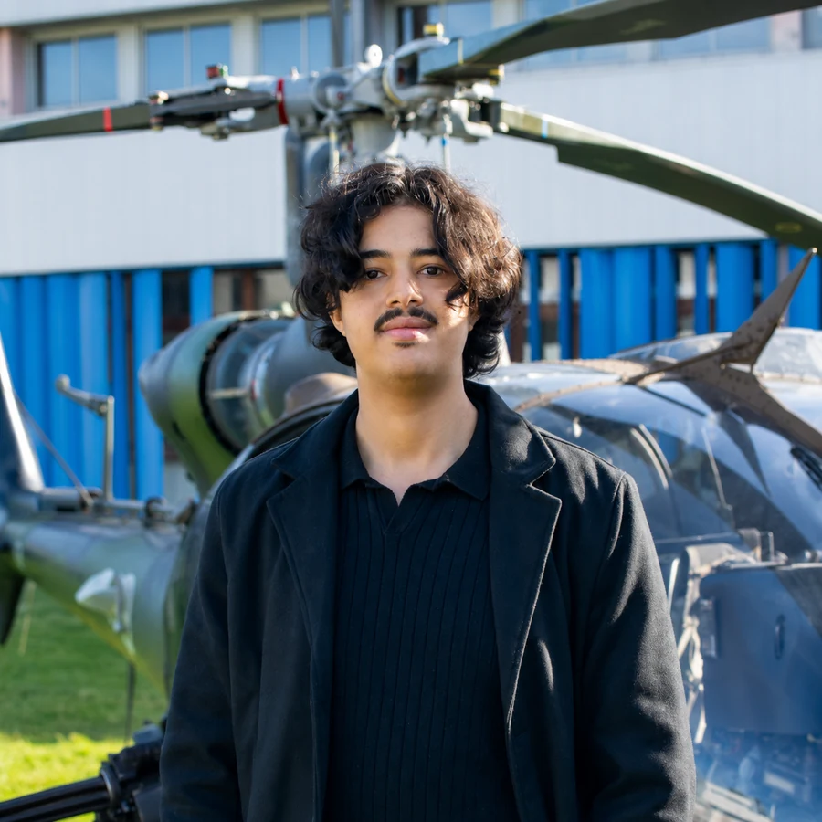

Élève ingénieur Arts et Métiers
Je relie la mécanique, la donnée et l’IA aux réalités industrielles.
Orienté aéronautique et spatial, je conçois des solutions concrètes : modèles de calcul, applications métiers, systèmes MES et outils d’aide à la décision.
Disponible pour un stage de fin d’études de février 2027 à août 2027

Spécialisation
Aeronautics & Space
Mobilité
France & international
01
Profil
Un ingénieur qui comprend le terrain avant de proposer une solution.
Mon parcours associe mécanique, simulation numérique, méthodes industrielles et développement logiciel. J’aime partir d’un problème réel, clarifier les contraintes, construire un prototype, mesurer les résultats puis documenter une solution utilisable par les équipes.
Je travaille avec méthode, confiance et sens des responsabilités. Mon objectif est de contribuer à l’industrialisation de systèmes aéronautiques plus sûrs, plus performants et mieux pilotés par la donnée.
02
Projets phares
Des réalisations à l’interface entre atelier, mécanique, données et intelligence artificielle.
P.01
MES sur Tulip — Evolutive Lean Factory
Conception d’un MES de niveau 3 pour digitaliser l’assemblage de vérins : traçabilité par ordre de fabrication, horodatage à chaque opération, module qualité et supervision en temps réel.
- 10opérations
- 21sous-opérations
- 11tables de données
Voir l’étude de cas
Architecture pensée pour identifier les goulots d’étranglement opération par opération. Le projet couvre six fonctions MESA et transpose les principes de traçabilité unitaire attendus sur une FAL.
P.02
Système ANDON digital
Application web temps réel avec API REST, cycle OPEN–ACK–ARRIVED–CLOSED, priorisation des alertes, suivi MTTA/MTTR, contrôle des SLA et capitalisation 5M.
Production • Qualité • Logistique • Maintenance
Voir l’étude de cas
La clôture d’une alerte exige une cause racine et une action corrective. Le système alimente une logique QRQC et améliore la réactivité collective sur la ligne Karakuri A1.
P.03
Reporting terrain par audio et IA
Pipeline transformant un compte rendu vocal en données techniques structurées et en rapport métier directement exploitable par les équipes industrielles.
- 5formats audio
- 17champs métier
Voir l’étude de cas
La solution combine transcription, extraction NLP et génération de livrable pour réduire les tâches administratives et mieux capitaliser les observations réalisées sur le terrain.
P.04
Analyse modale de structures
Modélisation par éléments finis, convergence de maillage, extraction des fréquences propres et interprétation des modes de flexion, torsion et couplage.
Résonance • Fatigue vibratoire • Flottement aéroélastique
Voir l’étude de cas
La démarche vise à prévenir la coïncidence entre fréquences propres et excitations aérodynamiques ou moteurs, enjeu critique pour les structures aéronautiques.
P.05
Optimisation d’un SVM par Uzawa
Implémentation from scratch d’un algorithme primal-dual sous contraintes, avec vérification de la convergence et visualisation automatique des vecteurs supports.
Classification de cordons de soudure WAAM
Voir l’étude de cas
Application à la fabrication additive arc-fil, procédé pertinent pour produire des structures aéronautiques de grande dimension en aluminium ou en titane.
P.06
Éco-conception et analyse de cycle de vie
Analyse complète d’une trottinette électrique, sélection des matériaux, quantification des impacts et recommandations de Design for Disassembly.
- 2 950MJ
- 209kg CO₂-eq
Voir l’étude de cas
L’étude identifie la fabrication et les matières premières comme principaux postes d’impact et quantifie le potentiel de récupération associé au recyclage.
P.07
Équilibrage dynamique de machines tournantes
Diagnostic vibratoire, équilibrage statique sur 1 plan et dynamique sur 2 plans par la méthode des coefficients d’influence et relevés piézoélectriques sur banc d’essai.
Turbines • Moteurs aéronautiques • Zéro vibration résiduelle
Voir l’étude de cas
Application directe aux arbres et compresseurs tournant à haute vitesse dans le secteur aérospatial pour prévenir la fatigue mécanique et garantir la sécurité des vols.
P.08
Conception avancée d'un Véhicule à Assistance Électrique (VAE)
Modélisation multi-physique, équation de dynamique longitudinale et dimensionnement du couplage électromécanique moteur-réducteur 140 W et batterie Li-ion.
- 140W nominal
- 1.1Hz cadence
Voir l’étude de cas
Démarche systémique et cinématique transposable au dimensionnement de la propulsion des drones (UAV) et des aéronefs électriques à décollage vertical (eVTOL).
P.09
Caractérisation de Machine Synchrone à Aimants Permanents
Étude expérimentale d’un moteur synchrone PMSM : essais à vide, constante de force électromotrice induite, bilans de puissance en charge et diagramme vectoriel de Fresnel.
- >95%Rendement
- PMSMAimants permanents
Voir l’étude de cas
Les MSAP constituent le cœur du concept d'avion plus électrique (More Electric Aircraft - MEA) pour les actionneurs de commandes de vol et la propulsion propre.
P.10
Modélisation multi-physique de chaîne de traction électrique
Simulation causale complète : Batterie, Onduleur, Moteur et Roues. Évaluation des appels de courant, pertes thermiques et suivi du SOC sur cycle de conduite standard.
Bilan énergétique • Autonomie • Optimisation Wh/km
Voir l’étude de cas
Méthodologie de simulation énergétique applicable à l'identique pour l'optimisation de mission des drones, des satellites ou des systèmes de propulsion hybride aérospatiale.
P.11
Optimisation Taguchi & ANOVA des conditions de coupe (OPTIRUG)
Plans d’expériences L8/L9 en usinage tournage, calcul des ratios Signal/Bruit (S/N) et modélisation statistique ANOVA de la variance pour minimiser la rugosité de surface.
Qualité 0 Défaut • Procédés Spéciaux • Aérospatial
Voir l’étude de cas
La maîtrise des plans d'expériences (Taguchi) et de l'ANOVA est indispensable en production aéronautique pour qualifier de nouveaux procédés d'usinage et garantir l'intégrité de surface des pièces critiques.
P.12
Conception de la base de données relationnelle OREXA
Modélisation MCD/MLD selon MERISE, normalisation stricte 3NF et développement sous Access/SQL d'un système complet de gestion des flux, formulaires et états techniques.
- 3NFNormalisation
- SQLRequêtes complexes
Voir l’étude de cas
La structuration rigoureuse des données techniques et du SQL est primordiale pour les outils de Product Lifecycle Management (PLM) et le suivi de configuration en aéronautique.
03
Parcours
Expérience industrielle, formation scientifique et responsabilités collectives.
Juil. 2025
Expérience
Stage ingénieur — DOGA FZ, Tanger Free Zone
Digitalisation de la performance industrielle : application Flask/SQLAlchemy pour cinq départements, exports Excel, plus de 15 KPI et recommandations Odoo/Power BI.
2025
Expérience
Chef de Projet / Pilote — Forum Job Dating (2e Édition)
Pilotage général de la 2e édition du Job Dating à Arts et Métiers campus de Rabat : coordination d'un forum entreprises de 40+ partenaires industriels, management de 15 responsables de pôles et pilotage budgétaire.
2024–2027
Formation
Arts et Métiers ParisTech
Cycle ingénieur, expertise Aeronautics & Space. Campus de Rabat puis campus de Bordeaux-Talence.
2022–2024
Formation
Classes préparatoires — filière MP
CPGE Tétouan : mathématiques, physique, sciences de l’ingénieur et résolution de problèmes complexes.
Depuis 2024
Expérience
Hôte Airbnb & Booking.com
Gestion des réservations, relation voyageurs, coordination opérationnelle et amélioration continue de l’expérience client.
04
Compétences
Une double culture mécanique et numérique, pensée pour l’industrie aéronautique.
Conception & calcul
CATIA 3DEXPERIENCEAbaqus FEASolidWorks
MATLABSimulinkAnsys Granta
Digital manufacturing
TulipMESISA-95MESA
Power BIOdooPLM
Développement & données
PythonFlaskSQLSQLAlchemy
NumPyPandasGitOpenAI API
Qualité & méthodes
LeanQRQC5M / IshikawaPoka-Yoke
KaizenTaguchiANOVAACV
Référentiels & Exigences industrielles
Standards de l'Aérospatiale & Méthodologies d'Ingénierie
Normes & Conformité Qualité
Industrialisation & Opérations (FAL)
Technologies & Procédés Avancés
Recherche & veille
L’employabilité responsable de l’IA dans l’aéronautique et le spatial.
Je m’intéresse aux copilotes métiers, à l’inspection assistée, à la maintenance prédictive, à l’analyse documentaire et à l’aide à la décision. Ma ligne directrice : une IA explicable, intégrée aux processus qualité et réellement utile aux ingénieurs comme aux opérateurs.
Parlons de votre prochain défi
Industrialisation, méthodes, structures ou IA appliquée : échangeons.
Je recherche un stage de fin d’études de février 2027 à août 2027, en France ou à l’international.